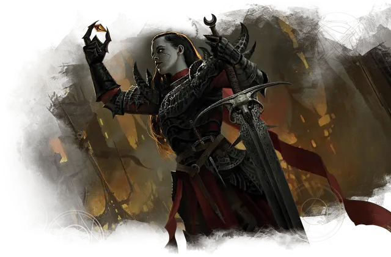

Тёмный страж
Blackguard
Средний Гуманоид (Любая раса), любое мировоззрение

Класс Доспеха 18 (латы)
Хиты 153 (18к8 + 72)
Скорость 30 футов
| мод | спас | ||
|---|---|---|---|
| СИЛ | 18 | +4 | +4 |
| ЛОВ | 11 | +0 | +0 |
| ТЕЛ | 18 | +4 | +4 |
| мод | спас | ||
|---|---|---|---|
| ИНТ | 11 | +0 | +0 |
| МДР | 14 | +2 | +5 |
| ХАР | 15 | +2 | +5 |
Навыки Атлетика +4, Запугивание +5, Обман +5
Чувства пассивное Восприятие 12
Языки Любой 1 (обычно Общий)
Опасность 8 (3900 опыта)
Бонус мастерства +3
Среда обитания Город, Подземье
Особенности
Использование заклинаний. . Тёмный страж является заклинателем 10-го уровня. Его базовой характеристикой является Харизма (Сл спасброска от заклинания 13, +5 к попаданию атаками заклинаниями). У него подготовлены следующие заклинания паладина:
• 1 уровень (4 ячейки): приказ [command], защита от зла и добра [protection from evil and good], громовая кара [thunderous smite].
• 2 уровень (3 ячейки): клеймящая кара [branding smite], поиск скакуна [find steed].
• 3 уровень (2 ячейки): ослепляющая кара [blinding smite], рассеивание магии [dispel magic].
Действия
Мультиатака. Тёмный страж совершает три атаки палашом или из короткого лука.
Палаш. . Рукопашная атака оружием: +7 к попаданию, досягаемость 10 футов, одна цель. Попадание: Рубящий урон 9 (1к10 + 4).
Короткий лук. . Дальнобойная атака оружием: +3 к попаданию, дистанция 80/320 футов, одна цель. Попадание: Колющий урон 5 (1к6 + 2).
Ужасный аспект (Перезаряжается после короткого или продолжительного отдыха). . Тёмный страж распространяет вокруг себя магическую угрозу. Все противники в радиусе 30 футов должны пройти проверку по Мудрости Сл 13. При провале спасброска, цели становятся испуганными на 1 минуту. Если испуганная цель оканчивает свой ход за пределом радиуса в 30 футов от темного стража, то она может повторить спасбросок и окончить эффект испуга в случае успеха.
Описание
Тёмные стражи – это паладины, которые нарушили свои священные клятвы, и теперь удовлетворяют свои собственные темные стремления. Они якшаются с исчадиями и нежитью, и отвергли всё добро из своих прошлых жизней.